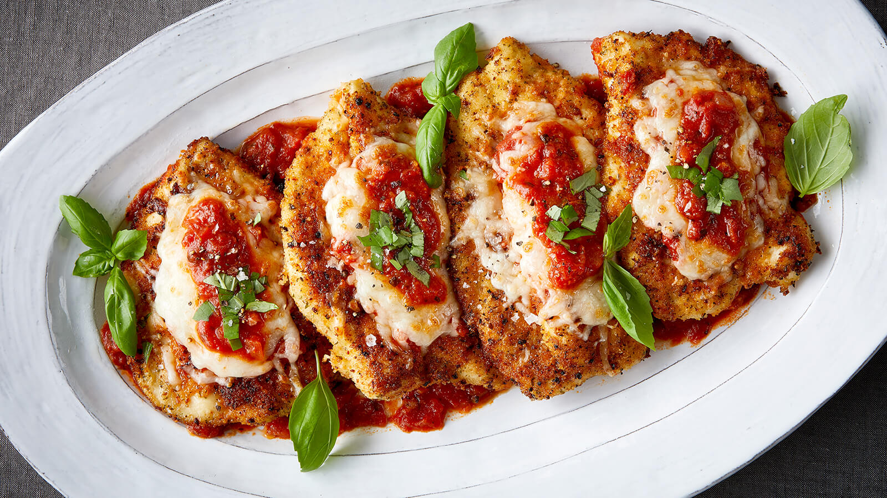

Chicken Parm

Delicious and (not so) nutritious!
This recipe will teach you how to make amazing
chicken parmesan. You don't have to be italian to wanna say, "Mamma Mia! after trying this.
Ingredients
- Extra virgin olive oil
- 4 breaded chicken cutlets
- 1 bag of shredded mozarrela
- 3 gallons of Daddy Mario's "Special" Marinara Sauce
Steps
- Preheat Oven to 400F
- Heat 2tbsp of oil in a large nonstick skillet over medium-high heat. Add chicken to pain and cook until a deep golden-brown crust forms, about 3-5 minutes per side. Do not overcrowd pan; cook in batches if necessary.
- Transfer chicken to sheet pan. Top each chicken cutlet with a spoonful of sauce followed by an even layer of cheese. Reserve remaining sauce.
- Preheat broiler to high with rack 6-inches from heating element. Place pan in oven and broil until cheese is golden brown and sauce begins to bubble, about 2-3 minutes, or until internal temperature of chicken reaches 165°F.
- To serve, place chicken on plate and pour over remaining sauce